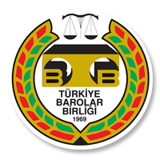

<div class="img min-h-screen min-w-screen ">
    <main>
      <main class="container">
        <div class="content">
          <div
            class="Hakkımızda"
            style="margin-left: 100px; margin-top: 40px; margin-bottom: 20px"
          >
            <div class="m-b-md">
              <h2>
                <span style="color: rgb(0, 0, 0)"
                  ><i>Büro<span class="c">Tek</span> Hakkımızda</i></span
                >
              </h2>
            </div>
            <section class="about">
              <div class="about-content row">
                <div class="col-md-3">
                  
                </div>
                <div class="col-md-8">
                  <div class="about-text">
                    <p>
                      <b>Bürotek</b>Türkiye Barolar Birliği tarafından avukatlar
                      için özel olarak hazırlanmış bir online büro yönetimi
                      sistemidir.
                    </p>

                    <p>
                      Başvurular Türkiye Barolar Birliği multi login aracılığı ile
                      <b>Bürotek</b> sekmesi altından baro kartı ile
                      yapılabilmektedir.
                    </p>

                    Başvurular Türkiye Barolar Birliği multi login aracılığı ile
                    Bürotek sekmesi altından baro kartı ile yapılabilmektedir.
                    Bürotek programı bir avukatlık bürosunun tüm temel
                    ihtiyaçlarını karşılayacak şekilde tasarlanmıştır. Büro
                    içerisinde çalışan sekreter, avukat vb. kişileri de programa
                    dahil etmek mümkündür. Böylelikle büro yöneticisinin yaptığı
                    birçok işlemin büro içerisinde çalışan ve programa kaydedilen
                    diğer çalışanlar tarafından da yapabilmesi mümkün hale
                    gelmektedir. Kullanımı oldukça kolay olan program üzerinde
                    büronuz için yeni kişi, danışma, dava, icra dosyası kayıtları
                    oluşturmak, dilekçe yazmak, eksik kalan dilekçeleri
                    tamamlamak, önceki dilekçelere erişmek, kayıtlı dava ve icra
                    dosyaları üzerinde çalışmak, dosyalar içine gelir-gider girişi
                    yapmak, cari hesap içerisine tüm büro gelir ve giderlerini
                    kaydetmek, büro personellerinin kaydını tutmak vb. tüm
                    işlemleri yapılabilmektedir. Dosyalarınızın, alacak ve borç
                    bilgilerinin tek bir sistem içerisinde kayıt altına alınıyor
                    olması; iş akışlarını kolaylaştırırken güvenli bir şekilde
                    saklanmalarını sağlamaktadır. Sınırsız sayıda kişi kaydı
                    yapılabilen program ile kişilerin; müvekkil, borçlu, tanık vb.
                    türlerde kaydedilebilmeleri mümkündür. Benzer şekilde diğer
                    işlem ve kayıtları da (danışma, dava, dosya, dilekçe, cari
                    hesap) bir kota sınırlaması olmadan gerçekleştirebilmektedir.
                    Ayrıca program içerisinde bulunan örnek dilekçe, talep
                    yazıları, talimat ve müzakere örnekleri işlemlerin daha hızlı
                    yürütebilmelerine olanak tanımaktadır. Bürotek web tabanlı
                    olup, her yerden ve her cihazdan erişilmesi mümkündür.
                    Sistemin internet üzerinden çalışması sayesinde güncelleme ve
                    yedekleme işlemleri otomatik olarak yapılmaktadır. Programda
                    ayrıca talepler bölümünden veya telefon ve e-posta aracılığı
                    ile kesintisiz Müşteri Destek Hizmeti sunulmaktadır.
                  </div>
                </div>
              </div>
              <div class="iletisim">
                <p style="font-weight: bold">
                  Müşteri Hizmetleri (Mesai Saatleri İçinde)
                </p>
                Telefon : +90 (850) 251 8 427<br />
                <span style="padding-right: 17px">Faks</span> : +90 (850) 251 8
                427
                <p style="font-weight: bold">
                  E-Posta Adreslerimiz; (7/24 Online Destek)
                </p>
                Bilgi Almak İçin : <a href="#"> bilgi@burotek.av.tr</a><br />
                Sorularınız ve Sorunlarınız : <a href="#"> destek@burotek.av.tr</a
                ><br />
                <p style="font-weight: bold">Adresimiz;</p>
                <b>Türkiye Barolar Birliği Başkanlığı</b><br />
                Oğuzlar Mahallesi Barış Manço Caddesi<br />
                Av. Özdemir Özok Sokak No:8<br />
                Balgat, 06650, ANKARA<br />
              </div>
            </section>
          </div>
        </div>
      </main>
    </main>
  </div>
